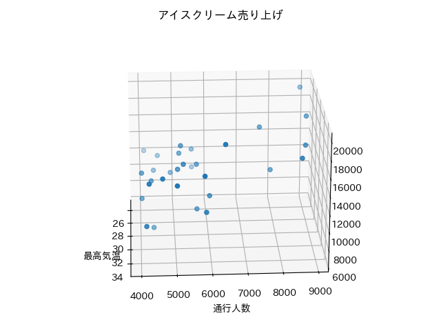
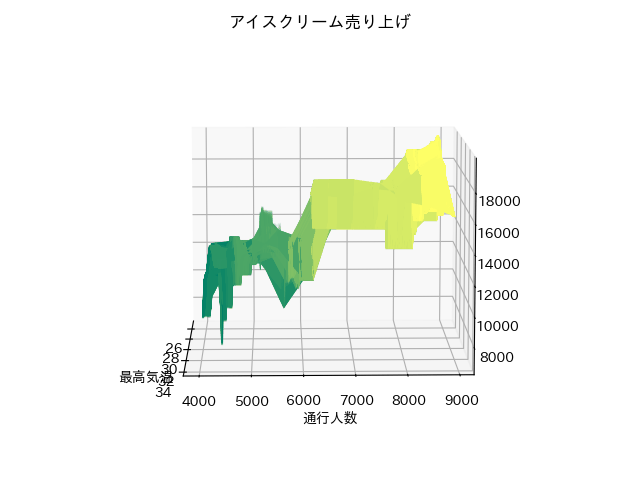

CatBoostRegressor, ExtraTreesRegressor, NGBoostRegressor を使って重回帰を試すプログラムです。
サンプルデータ：『イノベーションとAI』という本に載っていたサンプル
http://web.sfc.keio.ac.jp/~takefuji/ice.csv
・説明変数：最高気温、通行人数
・目的変数：アイスクリームの売上
・お題：アイスクリーム売上＝f(最高気温, 通行人数)となる関数 f を求めよ。
説明変数×2種類＋目的変数×1種類なので、まずは 3次元グラフでデータを眺めてみる。

・通行人数が 9,000 付近だと最高温度と売上は負の相関がありそう。
・通行人数と売上は、正の相関がありそう。

・通行人数が7,000以下では、最高温度と売上は正の相関がありそう。
pip install -r src\requirements.txt
・CatBoost Regressor
python src\plot3D_CatBoostRegressor.py
・ExtraTrees Regressor
python src\plot3D_ExtraTreesRegressor.py
・NGBoost Regressor
python src\plotD_NGBoostRegressor.py
・Open3Dを使ってデータを確認する場合は
pip install open3d
python src\Visualize3D_data_by_open3d.py